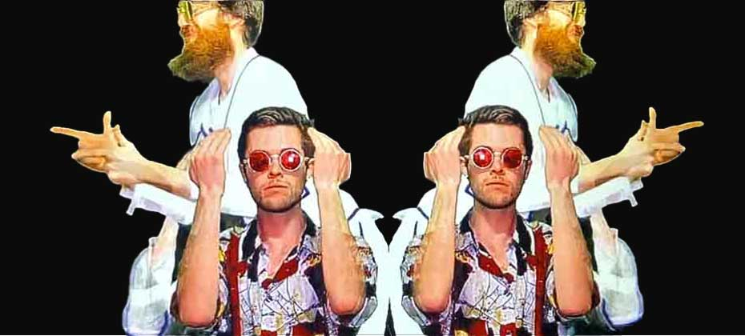
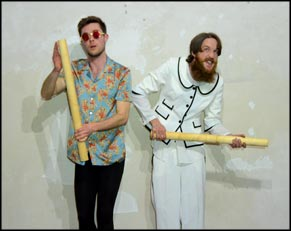
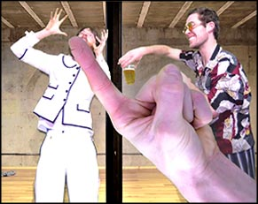
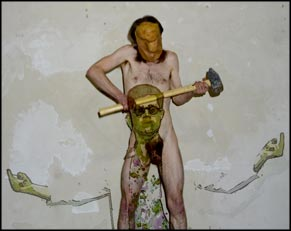
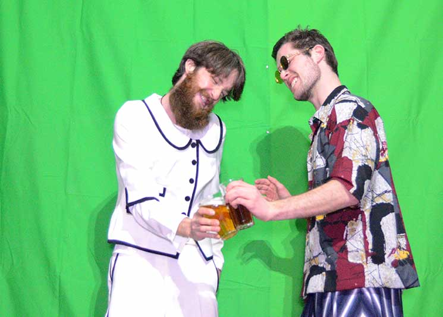

Becoming Anima is an improvised, experimental performance of live stop-motion creation. Somewhere between a psychedelic neo-butoh, spontaneous music-video creation, and Saturday morning television. We animate ourselves by performing improvised movement sequences at a very slow speed, supported by the input of live music, objects, multi-screen open-source software and spoken text. Time slows down and untold stories emerge from the bodies. Graceful to grotesque movements reveal moments of humility, vulnerability and joyful self-ridicule. Presented as part of the Online Performance Art Festival (March 2021) and soon to be performed for PAF Berlin, in collaboration with visual artist Marina Oo (live painting) and poet Michelle Madsen (live improvised vocals).



ANIMA-TRON
Click and slide for green screen magic
